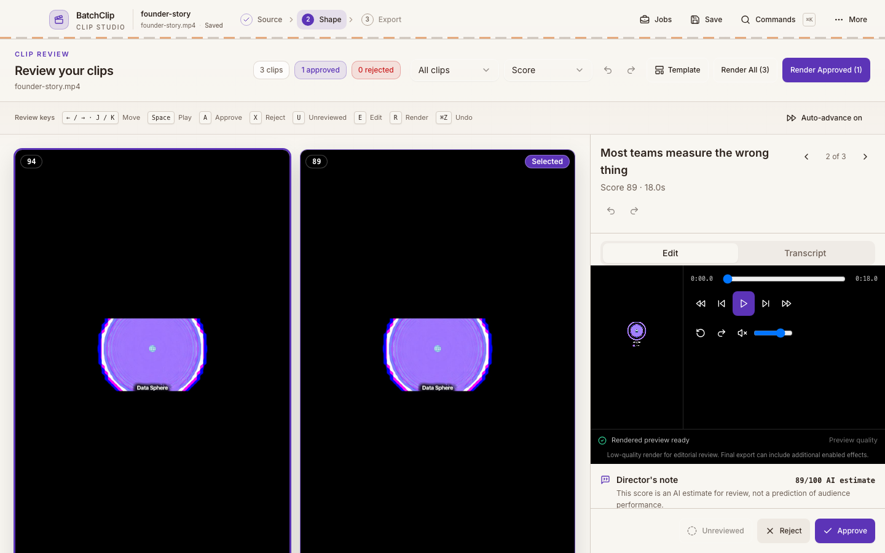

macOS
Apple Silicon · DMG installer · 193 MB
Desktop clip studio for macOS and Windows
BatchClip finds the strongest moments, reframes the speaker, burns in captions, and gives you a fast approve-or-reject pass before the final render.
Local rendering. Reusable project files. You control every cut.

One focused desktop workflow handles the repetitive work while every creative decision stays visible.
Start with MP4, MOV, MKV, WEBM, or a supported YouTube link.
AI scoring reads the full transcript, ranks candidates, and keeps the surrounding context.
Scene and face detection build a speaker-aware 9:16 crop timeline.
Word timing, emphasis, hook titles, rehooks, zooms, and transitions share one render plan.
Scores are estimates, not promises. Preview the edit and keep the final decision yours.
BatchClip produces 1080×1920 video at 30 fps with captions burned into every export.
The output
The final clip is a standard video file with the crop, pacing, graphics, and captions already rendered. No template player or special hosting required.
These are current BatchClip screens. Open any image for a closer look.
Download the Apple Silicon build now. The Windows installer is not available yet.
Apple Silicon · DMG installer · 193 MB
64-bit · EXE installer
Current app version: 0.1.0.
BatchClip accepts local MP4, MOV, MKV, and WEBM files. You can also paste a supported YouTube URL and let the desktop app prepare the source.
No. The AI score helps sort candidates, but the review screen makes every estimate explicit. You approve, reject, trim, style, and render the final selection.
The primary workflow renders 1080×1920 vertical clips at 30 fps. A separate 1920×1080 long-form editing path is also available in the app.
Captions are burned into the finished video, so the style and word emphasis look the same wherever the clip is posted.
Rendering runs on your computer through FFmpeg and Remotion. AI scoring uses your configured Gemini connection, and optional media features use only the providers you enable.
Yes. BatchClip projects are saved as reusable .batchclip files, and completed
processing work can be resumed instead of starting from zero.